Please
Please
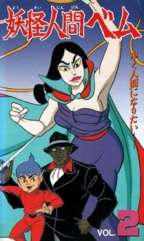
Youkai Ningen Bem
Genres: Horror
Three monsters, Bem, who looks like a gangster, Bero, who looks like a boy, and Bera, a witch, act as agents of justice, hoping that they will be allowed to become human. Several episodes involve them protecting a young boy. The style of animation is fairly distinctive, and the storylines not without interest.

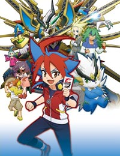
Future Card Buddyfight 6th
Episode 004 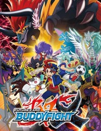
Future Card Buddyfight 4th and 5th (Dub)
Episode 060
Toji no Miko (Sub)
Episode 024 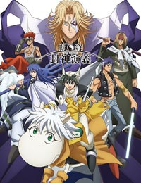
Hakyuu Houshin Engi (Sub)
Episode 022 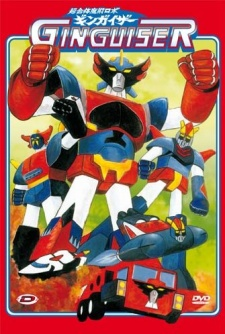
Chogattai Majutsu Robot Ginguiser
Episode 009
Future Card Buddyfight 6th
Episode 004 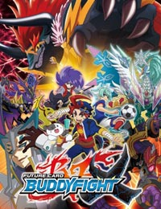
Future Card Buddyfight 4th and 5th (Dub)
Episode 060
Toji no Miko (Sub)
Episode 024 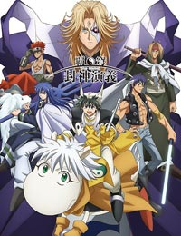
Hakyuu Houshin Engi (Sub)
Episode 022 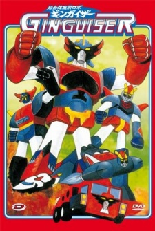
Chogattai Majutsu Robot Ginguiser
Episode 009
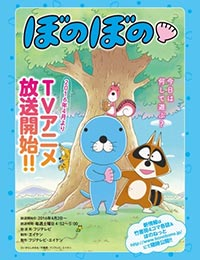
Bonobono (2016)
Episode 114 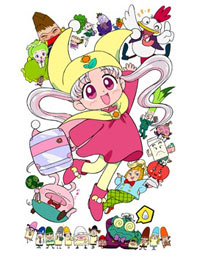
Yume no Crayon Oukoku
Episode 024 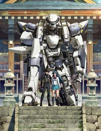
Full Metal Panic! Invisible Victory (Sub)
Episode 009
Grancrest Senki
Episode 024
Ninja Girl and Samurai Master 3rd
Episode 064
Bonobono (2016)
Episode 114 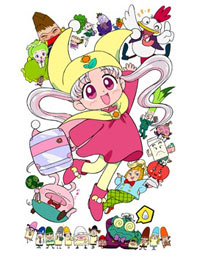
Yume no Crayon Oukoku
Episode 024 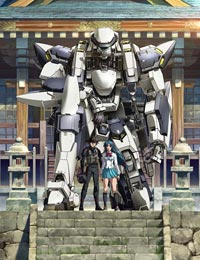
Full Metal Panic! Invisible Victory (Sub)
Episode 009
Grancrest Senki
Episode 024
Ninja Girl and Samurai Master 3rd
Episode 064
Lostorage Conflated WIXOSS
Episode 012
Gurazeni: Money Pitch
Episode 012
My Sweet Tyrant
Episode 012
Magical Girl Site
Episode 012
Beatless
Episode 023
Hina Festival (Sub)
Episode 012
Science Fiction New Century Lensman (Dub)
Movie
A Journey to Hiroshima (Dub)
OVA
Kwai Boo
Movie
Isekai Izakaya: Japanese Food From Another World
Episode 012
Layton's Mystery Detective Agency - Katry's Mystery Solving Files
Episode 011
Gegege no Kitarou (2007)
Episode 043
Nanako SOS
Episode 001
A Sister's All You Need (ONA)
Episode 006
Francesca: Girls Be Ambitious
Episode 006
Stitch! Perfect Memory (Dub)
Special
Dragon Ball Heroes
_Trailer
Dragon Quest: Dai's Great Adventure
Episode 032
Dragon Quest: Legend of the Hero Abel
Episode 013
Dorei-ku The Animation (Dub)
Episode 009
Kuroko no Basket: Last Game
Movie [Fansub] (BD)
Hina Festival (Dub)
Episode 009
Kakuriyo: Bed and Breakfast for Spirits (Dub)
Episode 010
Dances with the Dragons (Sub)
Episode 012
Megalo Box
Episode 012
Wotakoi: Love is Hard for Otaku
Episode 011
Dorei-ku The Animation (Sub)
Episode 011
Comic Girls
Episode 012
Tada Never Falls in Love
Episode 012
Piano Forest (TV)
Episode 010

High School DxD 4th Season (Sub)
Genres: Action, Comedy, Demons, Ecchi, Harem, Romance, School
Latest: Episode 010 [Uncensored]
Sword Art Online Alternative: Gun Gale Online
Genres: Action, Fantasy, Game, Military, Sci-Fi
Latest: Episode 010
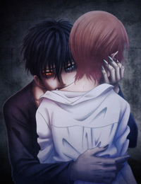Devils Line (Sub)
Genres: Action, Drama, Romance, Seinen, Supernatural, Vampire
Latest: Episode 011